Biến và kiểu dữ liệu trong Java
Các kiểu biến trong Java
Ở bài này, chúng ta cùng tìm hiểu về các kiểu biến trong Java. Biến là tên một khu nhớ. Có ba kiểu biến: biến cục bộ (còn gọi là biến local), thuộc tính (biến của instance- đối tượng) và biến static.
Bạn phải khai báo tất cả các biến trước khi chúng có thể được sử dụng. Form cơ bản của một khai báo biến như sau:
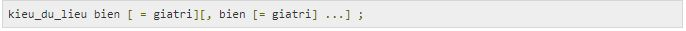Ở đây, kieu_du_lieu là một kiểu dữ liệu của Java và bien là tên của biến. Để khai báo nhiều hơn một biến với kiểu cụ thể, bạn có thể sử dụng một danh sách biến phân biệt nhau bởi dấu phảy.
Dưới đây là ví dụ về khai báo và khởi tạo biến hợp lệ trong Java:
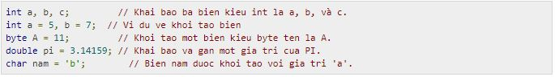Biến local trong Java
Các biến được khai báo trong các phương thức, constructor, hoặc khối.
Các biến được tạo khi phương thức, constructor hoặc khối được nhập và biến bị hủy khi phương thức, constructor hoặc khối kết thúc.
Chỉ định truy cập (access modifier) có thể không được sử dụng cho các biến local.
Các biến local chỉ nhìn thấy trong phương thức, constructor, hoặc khối được khai báo.
Các biến local được thực thi nội bộ.
Không có giá trị mặc định nào cho các biến local, vì thế các biến local nên được khai báo và một giá trị khởi tạo nên được gán trước khi sử dụng.
Ví dụ:
Ở đây, tuoi là biến local. Nó được định nghĩa bên trong phương thức tuoiCon() và phạm vi của nó được giới hạn chỉ trong phương thức này.

Nó sẽ cho một lỗi sau trong khi biên dịch:
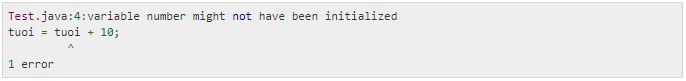Thuộc tính (hay biến instance) trong Java
Các thuộc tính được khai báo trong một lớp, nhưng ở bên ngoài một phương thức, constructor hoặc bất kỳ khối nào.
Khi một không gian nhớ được cấp phát cho một đối tượng trong một heap (một dạng cấu trúc hàng đợi có thứ tự ưu tiên), một slot cho mỗi giá trị thuộc tính được tạo ra.
Các thuộc tính được tạo khi một đối tượng được tạo bởi sử dụng từ khóa new và bị hủy khi đối tượng bị hủy.
Các thuộc tính giữ các giá trị mà phải được tham chiếu bởi nhiều hơn một phương thức, constructor hoặc khối, hoặc các phần chủ yếu của trạng thái đối tượng mà phải có mặt xuyên suốt lớp đó.
Các thuộc tính có thể được khai báo trong mức độ lớp trước hoặc sau khi sử dụng.
Chỉ định truy cập (access modifier) có thể được cung cấp cho các thuộc tính.
Các thuộc tính là nhìn thấy với tất cả các phương thức, constructor, và khối trong lớp. Tuy nhiên, tính nhìn thấy cho các lớp phụ có thể được cung cấp cho những biến này với sự sử dụng của chỉ định truy cập.
Các thuộc tính có các giá trị mặc định. Với các số, giá trị mặc định là 0, với Boolean là false và với đối tượng là null. Các giá trị có thể được gán trong khi khai báo hoặc trong constructor.
Các thuộc tính có thể được truy cập một cách trực tiếp bởi việc gọi tên biến bên trong lớp đó. Tuy nhiên, với các phương thức static và các lớp khác nhau (khi thuộc tính được cung cấp khả năng truy cập), nó nên được gọi bởi sử dụng tên đầy đủ hợp lệ như sau: ObjectReference.VariableName.
Ví dụ:
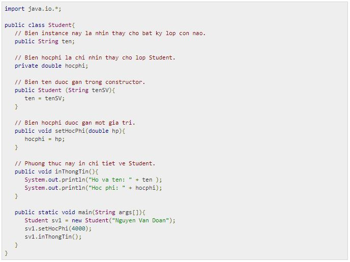Nó sẽ cho kết quả sau:
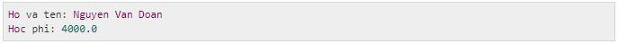Các biến Class/static trong Java:
Các biến class cũng được biết như là các biến static được khai báo với từ khóa static trong một lớp, nhưng ở bên ngoài một phương thức, constructor hoặc một khối.
Sẽ chỉ có một bản sao của mỗi biến class cho mỗi lớp, bất chấp việc bao nhiêu đối tượng được tạo từ nó.
Các biến static hiếm khi được sử dụng, ngoài việc được khai báo như là các hằng số. Các hằng số là các biến, mà được khai báo như là các biến static, biến final, biến chung/riêng. Các biến hằng số không bao giờ thay đổi từ giá trị khởi tạo của chúng.
Các biến static được lưu giữ trong bộ nhớ static.
Các biến static được tạo khi chương trình bắt đầu và bị hủy khi chương trình kết thúc.
Tính nhìn thấy là tương tự như các thuộc tính. Tuy nhiên, hầu hết biến static được khai báo chung khi chúng phải là có sẵn cho việc sử dụng của lớp.
Giá trị mặc định là giống với các thuộc tính. Với các số, giá trị mặc định là 0; với Boolean là false, và với đối tượng là null. Các giá trị có thể được gán trong khi khai báo hoặc trong constructor. Ngoài ra, các giá trị có thể được gán trong các khối khởi tạo static đặc biệt.
Các biến static có thể được truy cập bởi việc gọi tên lớp: ClassName.VariableName.
Khi khai báo các biến class như public static final, thì các tên biến ở dạng chữ hoa. Nếu các biến static không là public và final, thì cú pháp đặt tên giống với các biến local và thuộc tính.
Ví dụ:
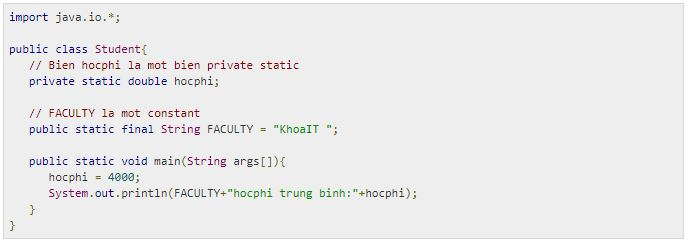Nó sẽ cho kết quả sau:
Ghi chú: Nếu các biến được truy cập từ lớp bên ngoài, hằng số nên được truy cập như ở dạng: Student.FACULTY
Kiểu dữ liệu trong Java
Các biến là không gì khác ngoài các vị trí bộ nhớ dành riêng để lưu các giá trị. Nghĩa là, khi bạn tạo một biến, bạn dự trữ một số không gian trong bộ nhớ.
Dựa trên kiểu dữ liệu của một biến, hệ điều hành cấp phát bộ nhớ và quyết định cái gì có thể được lưu giữ trong bộ nhớ dành riêng. Vì thế, bằng việc gán các kiểu dữ liệu khác nhau tới các biến, bạn có thể lưu giữ integer, thập phân, hoặc các ký tự trong những biến này.
Có hai kiểu dữ liệu có sẵn trong Java:
Các kiểu dữ liệu gốc (Primitive)
Các kiểu dữ liệu tham chiếu/đối tượng (không phải kiểu gốc Non-primitive)
Trước khi đi vào giới thiệu chi tiết về từng kiểu dữ liệu, bạn có thể theo dõi bảng tóm tắt sau:
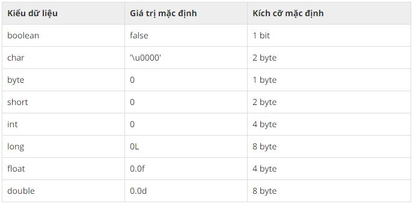Câu hỏi: Tại sao char sử dụng 2 byte trong Java và \u0000 là gì?
Bởi vì Java sử dụng Unicode chứ không phải ASCII. \u0000 là dãy thấp nhất trong Unicode.
Các kiểu dữ liệu gốc trong Java
Có 8 kiểu dữ liệu gốc được hỗ trợ bởi Java. Các kiểu dữ liệu gốc này được tiền định nghĩa bởi ngôn ngữ và được định danh bởi một từ khóa. Dưới đây là chi tiết về 8 kiểu dữ liệu gốc này:
char:
Dùng để lưu dữ liệu kiểu kí tự hoặc số nguyên không âm có kích thước 2 byte (16 bit)
Giá trị nhỏ nhất là '\u0000' (hoặc 0) và giá trị lớn nhất là '\uffff' (hoặc 65,535)..
Ví dụ: char nam ='T'
Tại sao Java sử dụng Unicode?
Trước Unicode, có nhiều chuẩn ngôn ngữ như ASCII, ISO 8859-1, KOI-8, GB18030, … Điều này gây là hai vấn đề sau:
Một giá trị code cụ thể tương ứng với các chữ cái khác nhau trong các chuẩn ngôn ngữ đa dạng.
Mã hóa cho các ngôn ngữ với các tập ký tự lớn có độ dài biến đổi. Một số ký tự chung được mã hóa thành các byte đơn, một số khác cần hai hoặc nhiều byte.
Để xử lý các vấn đề này, một chuẩn ngôn ngữ mới được phát triển, đó là Unicode. Trong Unicode, ký tự giữ 2 byte, vì thế Java cũng sử dụng 2 byte cho các ký tự.
Kiểu dữ liệu byte:
Dùng để lưu dữ liệu kiểu số nguyên có kích thước một byte (8 bit)
Giá trị nhỏ nhất là -128 (-2^7) và giá trị lớn nhất là 127. (2^7 -1)
Giá trị mặc định là 0
Kiểu dữ liệu byte được sử dụng để lưu giữ khoảng trống trong các mảng lớn, chủ yếu là các số nguyên.
Ví dụ: byte x = 20 , byte y = -10
Kiểu dữ liệu short:
Dùng để lưu dữ liệu có kiểu số nguyên, kích cỡ 2 byte (16 bit).
Giá trị nhỏ nhất là -32,768 (-2^15) và giá trị lớn nhất là 32,767 (2^15 -1).
Kiểu dữ liệu short cũng có thể được sử dụng để lưu bộ nhớ như kiểu dữ liệu byte.
Giá trị mặc định là 0.
Ví dụ: short t = 50, short z = -10
int:
Dùng để lưu dữ liệu có kiểu số nguyên, kích cỡ 4 byte (32 bit).
Giá trị nhỏ nhất là - 2,147,483,648.(-2^31) và giá trị lớn nhất là 2,147,483,647 (2^31 -1)
Nói chung, int được sử dụng như là kiểu dữ liệu mặc định cho các giá trị nguyên.
Giá trị mặc định là 0.
Ví dụ: int a = 5, int b = -50
long:
Dùng để lưu dữ liệu có kiểu số nguyên có kích thước lên đến 8 byte.
Giá trị nhỏ nhất là -9,223,372,036,854,775,808.(-2^63) và lớn nhất là 9,223,372,036,854,775,807. (2^63 -1)
Kiểu này được sử dụng khi cần một dải giá trị rộng hơn int.
Giá trị mặc định là 0L.
Ví dụ: long a = 100000L, int b = -200000L
float:
Dùng để lưu dữ liệu có kiểu số thực, kích cỡ 4 byte (32 bit)
Kiểu Float được sử dụng chủ yếu để lưu bộ nhớ trong các mảng rộng hơn các số thực dấu chấm động.
Giá trị mặc định là 0.0f.
Kiểu Float không bao giờ được sử dụng cho các giá trị chính xác như currency.
Ví dụ: float usd = 22.5f
double:
Kiểu dữ liệu double được sử dụng để lưu dữ liệu có kiểu số thực có kích thước lên đến 8 byte
Nói chung, kiểu dữ liệu này được sử dụng như là kiểu mặc định cho các giá trị decimal.
Kiểu double không bao giờ được sử dụng cho các giá trị chính xác như currency.
Giá trị mặc định là 0.0d.
Ví dụ: double ct = 676.7
boolean:
Độ lớn chỉ có 1 bit
Dùng để lưu dữ liệu chỉ có hai trạng thái true hoặc false
Giá trị mặc định là false.
Ví dụ: boolean switch1 = true
Kiểu dữ liệu Object trong Java
Các biến đối tượng được tạo bởi sử dụng các constructor đã được định nghĩa của các lớp. Chúng được sử dụng để truy cập các đối tượng. Những biến này được khai báo ở kiểu cụ thể mà không thể thay đổi. Ví dụ: Employee, Puppy, …
Giá trị mặc định của bất kỳ biến đối tượng nào là null
Một biến đối tượng có thể được sử dụng để tham chiếu tới bất kỳ đối tượng nào trong kiểu được khai báo hoặc bất kỳ kiểu tương thích nào.
Ví dụ: Animal animal = new Animal("giraffe");
Literal trong Java
Một Literal hay một hằng là một code nguồn biểu diễn một giá trị cố định. Chúng được biểu diễn một cách trực tiếp trong code mà không cần kỹ thuật tính toán nào.
Các literal có thể được gán tới bất kỳ kiểu biến gốc nào. Ví dụ:
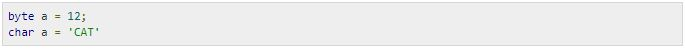byte, int, long, và short có thể được biểu diễn trong hệ thập phân (cơ số 10), hệ thập lục phân (cơ số 16), hoặc hệ bát phân (cơ số 8).
Tiền tố 0 được sử dụng để chỉ hệ bát phân, và tiền tố 0x chỉ dẫn hệ cơ số 16 khi sử dụng những hệ cơ số này cho các literal. Ví dụ:

String literal (hằng chuỗi) trong Java được xác định giống như trong hầu hết các ngôn ngữ khác bằng việc bao quanh một chuỗi ký tự liên tục trong trích dẫn kép. Ví dụ về string literal:
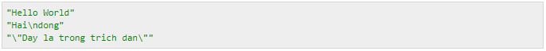Các hằng chuỗi và hằng ký tự có thể chứa bất kỳ ký tự Unicode nào. Ví dụ:
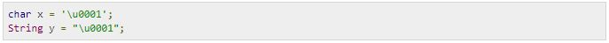Ngôn ngữ Java hỗ trợ một số dãy thoát đặc biệt cho hằng chuỗi và hằng ký tự như sau:
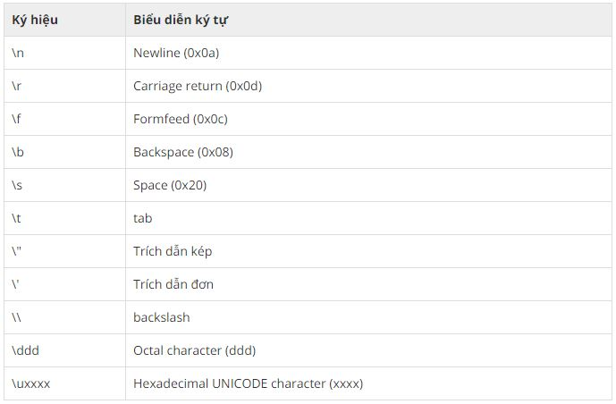